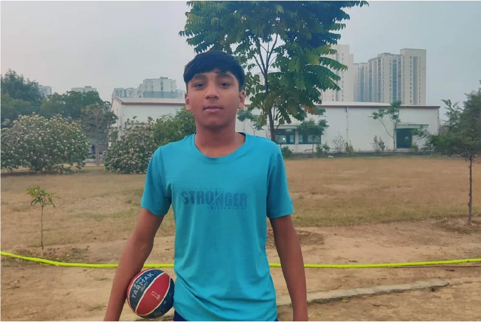
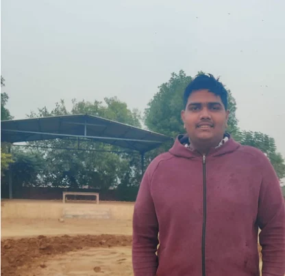
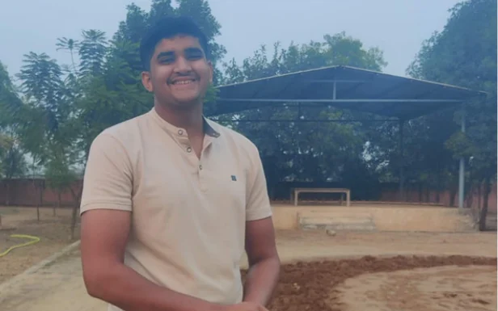

Team
A Design Research Methods project. I worked on it as part of a team of four, guided by Dr. Nagma Sahi Ansari.
- Anamika Shrivastava
- Aditya Kumar
- Ananya Bijolia
- Nishita Markam
Part one · Design Research Methods I
Wrestling Intro
Text on this image, in the order it is stored in the file:
WRESTLING INTRO FREESTYLE GREECO-ROMAN YAĞLI BÖKH PEHLWANI DESIGN RESEARCH METHODS-I WRESTLING COMMUNITY 1
Community Introduction
Text on this image, in the order it is stored in the file:
Who Are We Studying? Who Are We Designing For? COMMUNITY COMMUNITY INTRODUCTION INTRODUCTION COMMUNITY INTRODUCTION Amateur wrestlers (school, college, district level) Train alongside academics or jobs Limited access to coaches & physiotherapy Train mostly in shared, community spaces Kushti: Traditional Indian wrestling. Akhāṛā: The institution and physical space for training, combining a gymnasium with a site for spiritual devotion and communal living. DESIGN RESEARCH METHODS-I WRESTLING COMMUNITY 2
Community History
Text on this image, in the order it is stored in the file:
COMMUNITY HISTORY COMMUNITYHISTORY COMMUNITY HISTORY Roots in the Mahābhārata and ancient warrior traditions Practiced through akhāṛās and guru–shishya pedagogy Combines physical discipline with moral values Enabled rural social mobility and identity Offers government jobs and Olympic presence A living tradition adapting to modern sport DESIGN RESEARCH METHODS-I WRESTLING COMMUNITY 3
Community Story · A Day Inside the Akhāra
Text on this image, in the order it is stored in the file:
COMMUNITY STORY COMMUNITYSTORY COMMUNITY STORY A Day Inside the Akhāra DESIGN RESEARCH METHODS-I WRESTLING COMMUNITY 4
Present State
Text on this image, in the order it is stored in the file:
PRESENT STATE Pressures on Indian Wrestling Urban migration - fewer residential akhāras Looked upon as regressive , lack of education and physical roughness. Injury stigma - pain often hidden Limited medical & safety infrastructure Despite existing challenges, wrestling remains one of the few Indian sports offering stable government career pathways and sustained Olympic representation, reinforcing its cultural relevance, national significance, and future security. DESIGN RESEARCH METHODS-I WRESTLING COMMUNITY 5
Research Methodology
Text on this image, in the order it is stored in the file:
RESEARCH METHODOLOGY CROSS-SECTIONAL ETHNOGRAPHY STUDY, BACKED BY AUTO- ETHNOGRAPHY AND VISUAL ANALYSIS. DESIGN THINKING PROCESS DOUBLE DIAMOND METHOD DEFINE DISCOVER DEVELOP DELIVER PROBLEM IDENTIFICATION HMW SOLUTION DESIGN RESEARCH METHODS-I WRESTLING COMMUNITY 5
Research Methods
Text on this image, in the order it is stored in the file:
Observation Immersive In- person and virtual interviews with wrestlers and coaches METHODS Research 1 2 3 Sample Size - 24 Jai Hanuman Kushti Akhara, Sanpada, Navi Mumbai VijayPal Kushti Akhara, Bamheta, Uttar Pradesh Shree Dinanath Pahalwan Akhada, Chas City Park Akhada, Bokaro RESEARCH METHODS DESIGN RESEARCH METHODS-I WRESTLING COMMUNITY 7
Identified Problems
Text on this image, in the order it is stored in the file:
Poor quality / worn-out mats Skin infections due to hygiene issues Space constraint Lack of injury-related medical guidance Disproportionate coach-to-student ratio IDENTIFIED PROBLEMS (ECOSYSTEM VIEW) Critical Issues : High coach-to-student ratio Coaches cannot correct everyone Amateurs train alone Postural mistakes go unnoticed Errors repeat leads to developing injuries DESIGN RESEARCH METHODS-I WRESTLING COMMUNITY 8
Problem Statement
Text on this image, in the order it is stored in the file:
PROBLEM STATEMENT Amateur wrestlers are at high risk of injury during unsupervised training due to limited guidance, while the social stigma surrounding sports-related injuries discourages open participation and rehabilitation. DESIGN RESEARCH METHODS-I WRESTLING COMMUNITY 9
Secondary Research
Text on this image, in the order it is stored in the file:
SECONDARY RESEARCH What Existing Studies Show: High injury incidence in wrestling Takedown and stance errors are major risk factors Requires high endurance and power. Training should be very dynamic. Injury Reality in Wrestling: Wrestling has one of the highest injury rates. The majority of injuries occur during practice. Postural breakdown leads to knee & shoulder injuries Injuries often untreated or ignored DESIGN RESEARCH METHODS-I WRESTLING COMMUNITY 10
How Might We
Text on this image, in the order it is stored in the file:
HOW MIGHT WE How might we support amateur wrestlers during self-training by providing low-tech, real-time posture guidance that reduces injury risk without replacing traditional coaching methods? DESIGN RESEARCH METHODS-I WRESTLING COMMUNITY 11
Research Objectives
Text on this image, in the order it is stored in the file:
RESEARCH OBJECTIVES To study the impact of self-training practices on injury risk among amateur wrestlers. To identify and analyse foundational postures used by amateur wrestlers during self-practice that contribute to the development of injury risk. To explore design-led approaches for limiting the risk of injuries in the identified postural studies. To design a low-tech solution that enables self- monitoring during unsupervised training. DESIGN RESEARCH METHODS-I WRESTLING COMMUNITY 12
Ideation to Solution
Text on this image, in the order it is stored in the file:
IDEATION TO SOLUTION COMPREHENSIVE GUIDE TRAINING LOG REAL TIME CAMERA TRACKING
Prototype & Working
Text on this image, in the order it is stored in the file:
Amateurs corrected posture quickly Increased awareness during self- training No need for constant coach presence 1 2 PROTOTYPE & WORKING Visual posture detection Comparison with reference stance Simple red/green feedback Works in limited space Lighting constraints identified How the Prototype Works User Testing Insights Biggest Benefit: SCALABILITY DESIGN RESEARCH METHODS-I WRESTLING COMMUNITY 13
User Testing
Text on this image, in the order it is stored in the file:
USER TESTING DESIGN RESEARCH METHODS-I WRESTLING COMMUNITY 2
Part two · Indian Wrestling: A Study On
Indian Wrestling · A Study On
Text on this image, in the order it is stored in the file:
INDIAN WRESTLING A STUDY ON Design Research Methods Guided by: Dr. Nagma Sahi Ansari
Project Overview
Text on this image, in the order it is stored in the file:
PROJECT OVERVIEW AI-ASSISTED MOTION TRACKING FOR WRESTLING TRAINING OVERVIEW This research explores self-training practices and posture-related injury risks among amateur wrestlers practicing within traditional akhāṛā environments. The project investigates how AI-assisted motion tracking can support safer training through real-time corrective feedback. PROJECT DURATION Qualitative Research (5 months) Quantitative Research (5 months) FOCUS AREA Wrestling Self-Training Injury Prevention Posture Awareness AI-Assisted Motion Tracking Real-Time Corrective Feedback
History of Kushti
Text on this image, in the order it is stored in the file:
HISTORY OF KUSHTI THE EVOLUTION OF INDIAN WRESTLING Indian wrestling, or kushti, originated from the ancient practice of malla-yuddha and evolved through Persian influences into the akhāṛā-based pehlwani tradition. Rooted in discipline, hierarchy, and embodied learning, wrestling later transitioned into modern competitive formats, contributing to India’s international sporting identity while continuing to preserve its traditional cultural ethos. Over time, it transitioned from mud-pit community-centered training rooted in discipline and collective identity to mat-based competitive wrestling focused on performance, scientific training, and international competition, while still retaining elements of its traditional cultural ethos.
Problem Statement
Text on this image, in the order it is stored in the file:
PROBLEM STATEMENT Wrestling is a high-intensity combat sport associated with repetitive biomechanical stress and high injury prevalence, particularly affecting the knee, shoulder, and soft tissues. Injuries often emerge gradually due to fatigue, posture misalignment, and repetitive technical errors during training. Within traditional wrestling systems, corrective feedback is largely dependent on coach observation. During unsupervised practice, technical deviations frequently remain unnoticed, increasing long-term injury risk.
Qualitative Research Overview
Text on this image, in the order it is stored in the file:
QUALITATIVE RESEARCH OVERVIEW RESEARCH METHODS An exploratory ethnographic study was conducted across traditional akhāṛā and wrestling training environments to understand behavioural patterns, self-training practices, posture awareness, and injury-related challenges among amateur wrestlers. The qualitative phase incorporated Practice-as-Research (PaR), observation, shadowing, contextual inquiry, and auto-ethnographic reflection to examine embodied training experiences within wrestling communities. SAMPLE METHOD KEY OBSERVATION Independent self-practice and repetitive technical rehearsal emerged as recurring behaviours, particularly when coaches were unavailable. Purposive Sampling (24 amateur wrestlers, and coaches) Practice-as-Research (PaR), Observation, Shadowing, Contextual Inquiry, Auto-Ethnographic Reflection
Quantitative Research Objective
Text on this image, in the order it is stored in the file:
QUANTITATIVE RESEARCH OBJECTIVE AIM OF THE STUDY To quantitatively investigate the relationship between self-training practices, posture-related injury risks, and the acceptance of AI-assisted corrective feedback systems among amateur Indian wrestlers. RESEARCH OBJECTIVE What is the prevalence of injuries sustained during unsupervised self-practice among amateur wrestlers? How do posture confidence and feedback availability relate to injury occurrence? To what extent do technology-related beliefs predict willingness to adopt an AI-based training application? What socio-cultural barriers within the akhāṛā system inhibit injury communication? How can a technology-assisted system provide real- time corrective feedback while remaining culturally non-intrusive?
Quantitative Research Methodology
Text on this image, in the order it is stored in the file:
QUANTITATIVE RESEARCH METHODOLOGY SAMPLE A mixed-method, cross-sectional research approach was adopted to quantitatively validate behavioural insights identified during the qualitative phase. METHODOLOGY Survey-based quantitative study Mixed-method triangulation Purposive Sampling 78 survey participants 20 qualitative interviews
Quantitative Research · Hypotheses
Text on this image, in the order it is stored in the file:
QUANTITATIVE RESEARCH HYPOTHESES H₀₁: Unsupervised self-training does not have a significant impact on injury risk among amateur wrestlers. H₁₁: Unsupervised self-training significantly increases injury risk due to the absence of immediate corrective feedback. H₀₂: Wrestlers’ willingness to adopt AI-based training technology is not significantly influenced by its perceived usefulness for injury prevention. H₁₂: Wrestlers are more willing to adopt AI-based training technology when they perceive it as useful for injury prevention. RESEARCH QUESTIONS How does self-training influence injury risk? How does limited corrective feedback affect posture awareness? How receptive are wrestlers toward AI-assisted training systems?
Research Instrument Design
Text on this image, in the order it is stored in the file:
RESEARCH INSTRUMENT DESIGN QUESTION TYPE Multiple-choice questions 5-point Likert scale TRAINING EXPOSURE Frequency of self-training Duration of self-training Training intensity SELF-TRAINING EXPERIENCE Confidence in self-practice Challenges in self-practice Perceived importance INJURY RISK Injury occurrence (past 1 year) Injury frequency (self-practice Injury context Cause of injury Behavioural impact of injury TECHNIQUE AWARENESS Error recognition Awareness level TECHNOLOGY ADOPTION Prior exposure to technology Comfort with technology Perceived usefulness (posture) Perceived usefulness (injury prevention) Willingness to adopt system Behavioural intention FEEDBACK AVAILABILITY Access to correction
Demographic & Training Styles
Text on this image, in the order it is stored in the file:
DEMOGRAPHIC & TRAINING STYLES Distribution of participants across different age groups Distribution of participants based on years of wrestling experience
Text on this image, in the order it is stored in the file:
DEMOGRAPHIC & TRAINING STYLES Distribution of participants by geographic location
Text on this image, in the order it is stored in the file:
DEMOGRAPHIC & TRAINING STYLES Distribution of participants based on wrestling style practiced Participants’ perspectives on the importance of self- training
Technology Adoption Findings
Text on this image, in the order it is stored in the file:
TECHNOLOGY ADOPTION FINDINGS FINDINGS Positive attitude toward motion tracking Interest in posture monitoring systems Preference for non-intrusive feedback mechanisms
Key Findings
Text on this image, in the order it is stored in the file:
TRAINING EXPOSURE DURING SELF-TRAINING INJURY OCCURRENCE RISK FACTORS DEMOGRAPHIC PROFILE KEY FINDINGS
Descriptive Analysis
Text on this image, in the order it is stored in the file:
DESCRIPTIVE ANALYSIS Total participants in the study: N = 78. Majority of participants belonged to the 19–25 age group and had 3–5 years of wrestling experience. Freestyle wrestling was the most commonly practiced style. DEMOGRAPHIC PROFILE
Text on this image, in the order it is stored in the file:
DESCRIPTIVE ANALYSIS TRAINING EXPOSURE DURING SELF-TRAINING Participants trained frequently, with an average of 5.32 training days per week. Average daily training duration was 3.15 hours. Moderate engagement in self-training practices was observed among participants. SELF-TRAINING AWARENESS & FEEDBACK Participants showed moderate posture confidence and body awareness during self-training. Delayed recognition of mistakes and inconsistent corrective feedback were observed. Findings highlighted the importance of immediate posture correction during solo practice.
Text on this image, in the order it is stored in the file:
Participants showed positive attitudes toward AI- assisted training systems. Most respondents believed AI could improve posture and help reduce injuries. TECHNOLOGY ACCEPTANCE RISK FACTORS Injuries occurred most commonly during matches and self-practice sessions. Fatigue, wrong posture, and lack of guidance emerged as the major causes of injuries. Knees, shoulders, wrists, and neck were among the most commonly affected body areas. 37.2% of participants reported experiencing injuries during self-training. 28.2% reported avoiding practice due to fear of injury. INJURY OCCURRENCE DESCRIPTIVE ANALYSIS KEY FINDINGS
Inferential Statistics
Text on this image, in the order it is stored in the file:
INFERENTIAL STATISTICS r=Correlation between Self_Training_Frequency & Injury_Occurrence SPEARMAN CORRELATION ANALYSIS Correlation coefficient of rₛ = 0.313 p-value = 0.005 The relationship was found to be statistically significant. This indicates that feedback availability during self- training was significantly associated with injury occurrence among participants. RESULT INTERPRETATION
Text on this image, in the order it is stored in the file:
INFERENTIAL STATISTICS SPEARMAN CORRELATION ANALYSIS Using Spearman correlation analysis correlation coefficient of rₛ = .404 p-value of < .001 The relationship was found to be statistically significant. This indicates that participants who perceived AI systems as useful for injury prevention were more willing to adopt AI-based training technology. RESULT INTERPRETATION r=Correlation between Tech_Injury_Prevention_Usefulness and AI_Adoption_Willingness
Design Opportunity & System Concept
Text on this image, in the order it is stored in the file:
DESIGN OPPORTUNITY & SYSTEM CONCEPT WHAT’S NEXT? How might we support amateur wrestlers during independent training through culturally aligned real-time corrective feedback? HOW MIGHT WE Real-time posture correction Safer independent training Injury prevention support Accessible movement awareness OPPORTUNITY AREAS
System Workflow & Prototype Development
Text on this image, in the order it is stored in the file:
SYSTEM WORKFLOW & PROTOTYPE DEVELOPMENT Camera-based motion capture Pose estimation using MediaPipe Skeleton tracking Movement analysis Real-time feedback generation WORKFLOW
Text on this image, in the order it is stored in the file:
SYSTEM WORKFLOW & PROTOTYPE DEVELOPMENT INTERFACE A simple to make the user journey easy Just setup the timer , upload a reference photo and you are good to go. The app uses voice assists and commands to do moves randomly for a better practice At the end returns a report of how the session went.
User Testing & Prototype Evaluation · Phase 1
Text on this image, in the order it is stored in the file:
USER TESTING & PROTOTYPE EVALUATION: PHASE - 1 TESTING OUTCOMES Improved posture awareness Increased confidence during self-training Better recognition of movement deviations Positive response toward real-time feedback
Text on this image, in the order it is stored in the file:
Increased posture awareness Improved confidence during self-training Better recognition of movement deviations TESTING OUTCOMES
User Testing & Prototype Evaluation · Verbatims
After watching Khabib and Jon Jones wrestling has become part of Indian MMA and people are dedicating more time on it. I think app really delivers what it says.
We as coach can use technology for betterment of our students and we can use it ourselves to update us with newer technologies and get a step closer to what is being used in first world countries.
Shadow practice has been very important since the game shifted to mat, I think in the time of social media this might become a trend and I can see people using it.



Limitations & Future Scope
Text on this image, in the order it is stored in the file:
LIMITATIONS & FUTURE SCOPE LIMITATIONS FUTURE SCOPE Relatively limited sample size Testing focused only on selected foundational wrestling postures Full spectrum of wrestling movements and variations not covered Limited scope for comprehensive biomechanical analysis Cultural and contextual constraints within traditional wrestling communities Challenges in capturing diverse movement patterns within a single study Scalability of the system to other sports involving independent and repetitive self- training practices Development of sport-specific AI movement and posture analysis models Integration of advanced biomechanical analysis for injury-risk prediction Creation of personalized training feedback ecosystems for grassroots and semi- professional athletes Longitudinal studies to evaluate effectiveness across multiple sports and training environments
Conclusions
Text on this image, in the order it is stored in the file:
CONCLUSIONS INDIAN WRESTLING This research explored self-training practices, posture awareness, and injury risks among amateur wrestlers through qualitative and quantitative research methods (n = 78). The findings identified limited corrective feedback during independent practice as a major challenge contributing to posture-related injuries. The developed AI-assisted motion tracking prototype demonstrates the potential of real-time posture feedback to support safer and more informed self- training within traditional wrestling environments.
Text on this image, in the order it is stored in the file:
THANKS THANKS